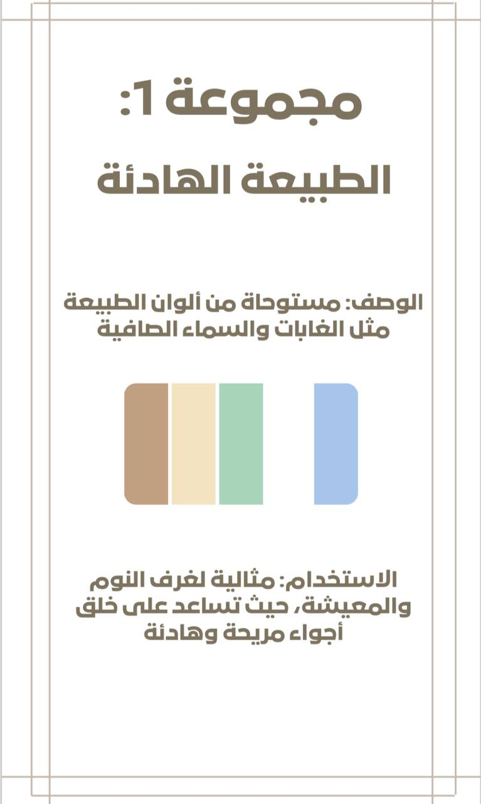
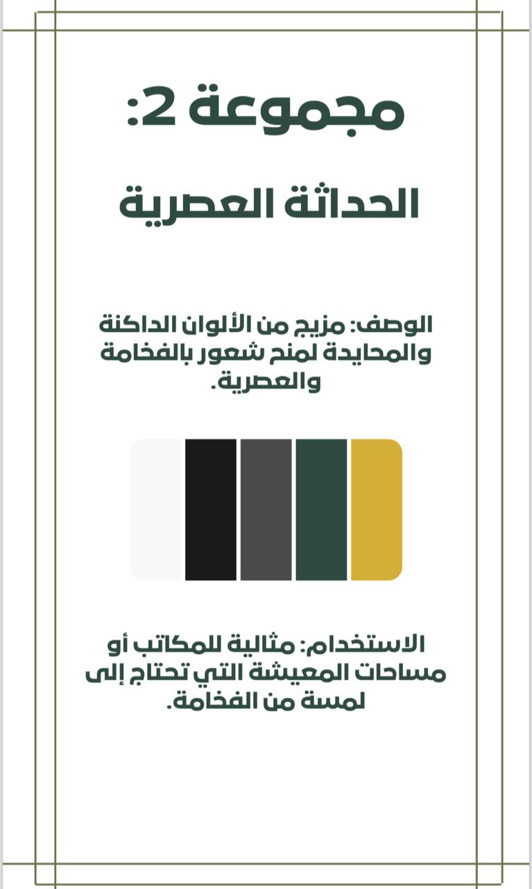
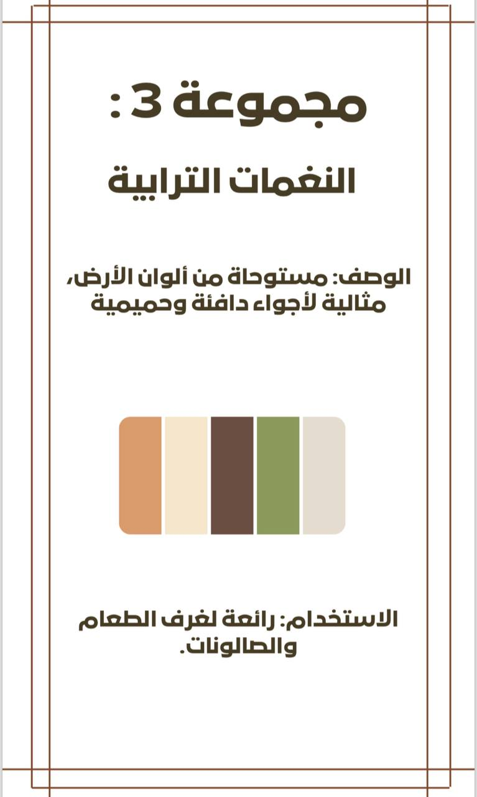
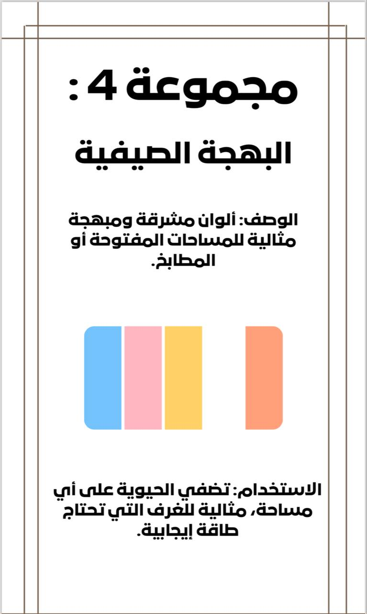
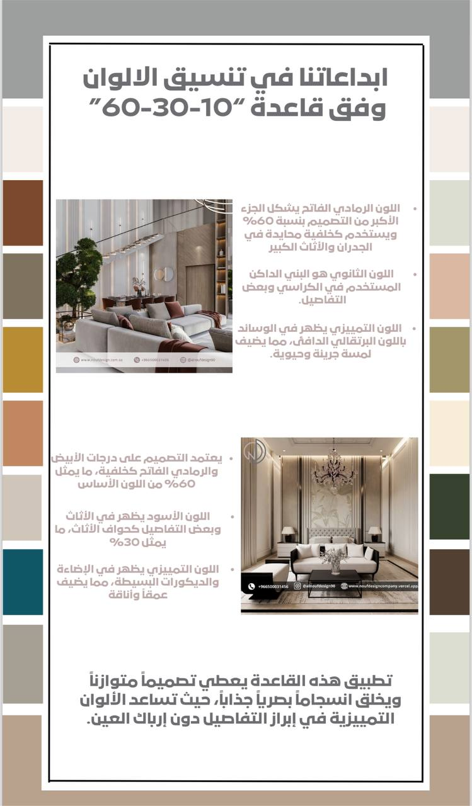
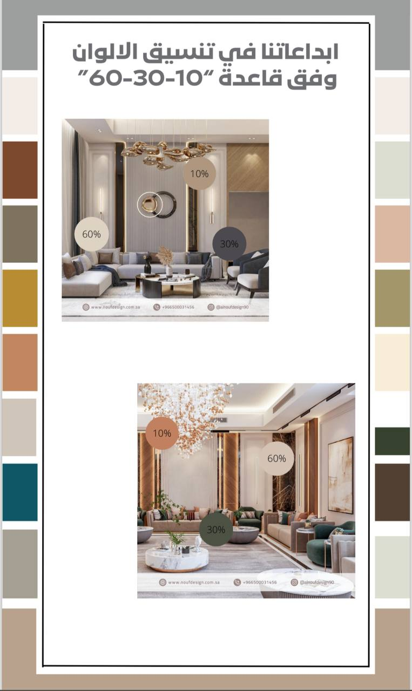

مرحبًا بك في دليل تخطيط مساحات الغرف
مرحبًا بكم في دليل الألوان المتناسقة، المرجع المثالي لكل من يسعى لإضفاء لمسة فنية وجمالية على مساحته، سواء في المنزل أو المكتب. في هذا الدليل، نقدم لكم مجموعة منسقة من الألوان يمكن استخدامها في الطلاء والأثاث، مما يجعل عملية التصميم ممتعة وبسيطة. ستتعلم كيفية تنسيق الألوان وفقًا للأجواء التي ترغب في خلقها.
كيفية استخدام دليل الألوان
الدليل يوفر خطوات واضحة لاستخدام الألوان بطريقة فعّالة:
- تحديد الهدف من الغرفة: هل تبحث عن غرفة هادئة أم مليئة بالطاقة؟
- اختيار مجموعة الألوان: يمكنك اختيار مجموعات جاهزة من الدليل أو استخدام الأكواد لإنشاء مجموعتك الخاصة.
- التطبيق في الواقع: جرّب عينات صغيرة من الطلاء أو القماش لضمان تناسق الألوان.
- التوازن بين الألوان: استخدم لونًا جريئًا مع ألوان محايدة لإضفاء مظهر متميز.
مجموعات الألوان المتناسقة
يحتوي الدليل على عدة مجموعات لونية تناسب أذواق متعددة، منها:
- مجموعة الطبيعة الهادئة: مثالية لغرف النوم والمعيشة.
- مجموعة الحداثة العصرية: تناسب المكاتب ومساحات المعيشة.
- مجموعة النغمات الترابية: تضفي أجواءً دافئة لغرف الطعام.
- مجموعة البهجة الصيفية: تضفي الحيوية للمطابخ والمساحات المفتوحة.




نصائح إضافية لتنسيق الألوان
- الإضاءة تلعب دورًا كبيرًا: قد يبدو اللون مختلفًا بين النهار والليل.
- الألوان الفاتحة تجعل الغرف تبدو أكبر: مناسبة للمساحات الصغيرة.
- قاعدة 10-30-60: قسم الألوان إلى 60% للون الأساسي، 30% للون الثانوي، و10% للون التمييزي.
أمثلة تطبيقية
لإبراز الأفكار المذكورة في الدليل، تم تقديم بعض الأمثلة على كيفية تطبيق تنسيق الألوان وفق قاعدة 10-30-60. يمكنك مشاهدة كيف تبرز الألوان التمييزية في الأثاث والتفاصيل الصغيرة، مما يمنح المساحة توازنًا وانسجامًا بصريًا.


الخاتمة
نأمل أن يكون دليل الألوان المتناسقة قد ساعدك في اكتساب بعض الأفكار التي يمكنك تطبيقها في مساحتك الخاصة. الألوان ليست مجرد عناصر جمالية، بل هي انعكاس لشخصيتك وتؤثر على راحتك اليومية. نتمنى أن تستمتع بتجربة تنسيق الألوان وأن تتمكن من خلق أجواء تتناسب مع ذوقك الفريد.